 

On Diversity, Equity, Inclusion and Justice
We recognize that the institutions of science have often privileged some people at the expense of others. In the Autonomous Empirical Research Group, we know that we must do better. Thus, we value and invite group members’ efforts to create systemic change both within our group and in the broader scientific community.
We also believe that our research is altogether better with a diverse team. As such, we embrace and encourage our members’ differences in age, color, disability, ethnicity, family or marital status, gender identity or expression, language, national origin, ability, political affiliation, race, religion, sexual orientation, socio-economic status, veteran status, and other characteristics that make our members who they are.
Our team is not confined to a single geographic area or type of institution. Instead, we welcome talented students and researchers from around the world, who come from varied backgrounds and have interests in neuroscience, cognitive science, psychology, computer science, artificial intelligence, machine learning, statistics, and/or physics.
Are you interested in joining us? If you are interested in learning more about our research or joining the Autonomous Empirical Research group, reach out to us via aergroup@brown.edu.
Ioana Marinescu is a sophomore studying Computer Science at Princeton University. Ioana is extending differentiable architecture search to overcome current limitations in recovering quantitative models of human cognition.
Thomas L. Griffiths (Princeton University)
Jonathan D. Cohen (Princeton University)
Matthew Flatt (University of Utah)
Vivek Srikumar (University of Utah)
Amar Abou-Hussein (Princeton University)
Hannah Evan (Princeton University)
Jessica Ann-Ereyi (Princeton University)
Kevin Phan (Princeton University)
Isabella Pu (Princeton University)
Jessica (JT) Tao (Princeton University)